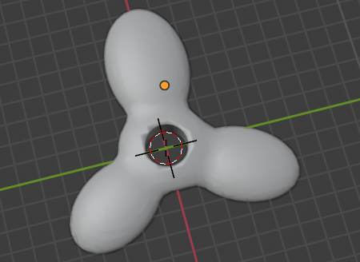

10/6/23: This week, I decided that I wanted to 3D print a fidget spinner for my final project. I downloaded blender and tested out its functions. Before I start designing my spinner, I want to get a full understanding on how blender works.
10/27/28: This week, I started to create an initial design of my fidget spinner. I learned how to combine multiple shapes together and how to cut a whole in a sphere. I currently have a rough draft of the design, but I plan to continue altering its shape.
11/3/23: This week, I started altering with my design. Since I created the basic overall design, I wanted to start perfecting. My fidget spinner had a noticible larger side, which I shrunk. I also continued to perfect other imperfections.
11/17/23: This week, I had some tecnical issues with my computer. I accidentally dropped it, and destoyed its display. I made sure that I saved my blender design, just incase everything on my computer was deleted. I got my computer back on Thursday, and everything was ok and still there. Today, I made additional alterations to my design, making it more proportional. I plan on being able to print my design in the next couple of weeks.
12/8/23: This week, I had to restart my project because I accidentally made one of the sides of the fidget spinner spikey. When I was re-adjusting the size, I ruined the settings. Unfortunately, my damages were un-fixable, and I had to redo my shape. Fortunatly, it was not that hard for me to redo my desgin, since I already knew how to do it. I expect to be 3D printing my design by the next week or so.
12/22/23: This week, I had my teach back so I spent a lot of time working on that. On my fidget spinner, I made some final tweaks to my design. The tweaks were related to sizing and scaling of my design. I wanted to make sure that each size of the spinner was even and the same size before I start printing. I plan to hopefully 3D print when I come back from break.
2/8/24: This week, I finished my project design. I am ready to 3D print and everything is in tact. I plan on beginning the printing process next week. I'm excited to begin working with a printer and learn how to use it and the process of converting my design to code.